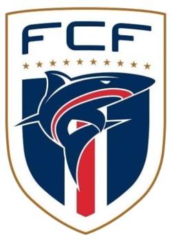

Federação Cabo-Verdiana de Futebol

Rumo à primeira conquista!

Curiosidade
A seleção Cabo-Verdiana estreou na Copa do Mundo 2026 com um feito histórico. A seleção africana empatou em 0 a 0 com a Espanha no dia 15 de junho, em Atlanta, nos Estados Unidos, conquistando seu primeiro ponto na competição.
Lista de Jogadores Convocados
- Vozinha
- Márcio Rosa
- CJ dos Santos
- Ianique dos Santos Tavares
- Diney
- Roberto Lopes
- Logan Costa
- Sidny Lopes Cabral
- Steven Moreira
- Wagner Pina
- Kelvin Pires
- Kevina Pina
- João Paulo Fernandes
- Jamiro Monteiro
- Garry Rodrigues
- Deroy Duarte
- Laros Duarte
- Yannick Semedo
- Telmo Arcanjo
- Nuno da Costa
- Jovane Cabral
- Gilson Tavares
- Willy Semedo
- Dailon Livramento
- Ryan Mendes
- Hélio Varela